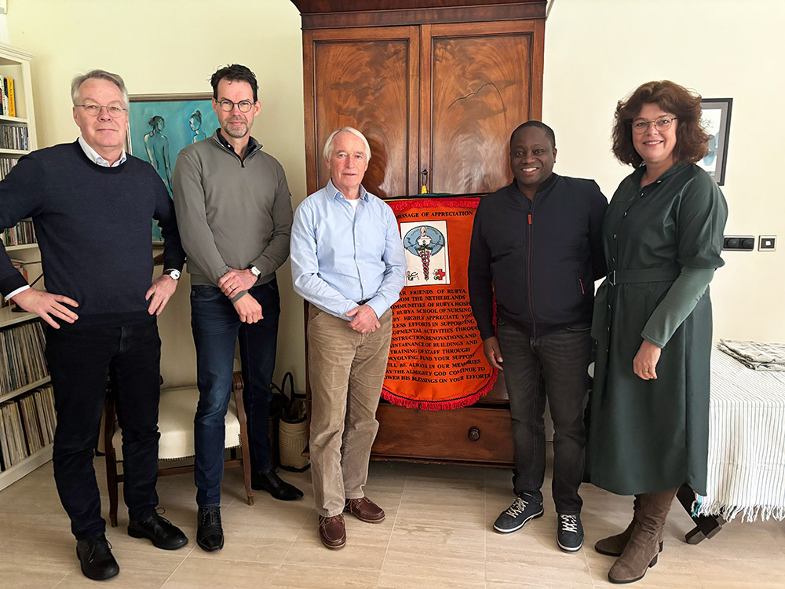

Oud-tropenartsen die Rubya niet los kunnen laten.
In 1996 kwamen artsen die in Rubya hadden gewerkt voor het eerst weer bij elkaar. Een jaar later was er een stichting.
Van een reünie naar een stichting.
Tijdens die eerste bijeenkomst bleek dat er behoefte was aan een meer structurele bijdrage aan de gezondheidszorg in Rubya, en aan steun voor het ziekenhuis en de verpleegstersopleiding.
Daarom werd in 1997 door enkele reünisten de Stichting Vrienden van Rubya opgericht. Bijna alle bestuursleden zijn nog steeds ex-tropenartsen die zelf in Rubya hebben gewerkt.
Ons logo. Het officiële beeldmerk van de stichting, met het ziekenhuis waar het allemaal om draait.
De eerste bijeenkomst
Alle oud-tropenartsen die in Rubya werkten komen samen.
Oprichting van de stichting
Om structureel te kunnen helpen: ziekenhuis én verpleegstersopleiding.
Leer- en Kenniscentrum gebouwd
Zodat de groeiende stroom studenten kan worden gehuisvest.
Nieuw bestuur
Sinds 10 januari 2025 een nieuw bestuur, met Frank uit Rubya zelf.
Nieuwe statuten en beleidsplan
Statuten aangepast aan de Wet Bijzonder Toezicht Rechtspersonen.
De coördinatie van materiële hulpverlening ten bate van Rubya Ziekenhuis.
In de ruimste zin van het woord. Met expertise op afstand en financiële armslag ondersteunen wij het ziekenhuis op een groot aantal terreinen, altijd in samenspraak met het management.
U geeft
Eenmalig of periodiek, vanaf elk bedrag.
Stichting Vrienden van Rubya
Alleen vrijwilligers. 100% van uw gift gaat naar de projecten.
Rubya Hospital
Samen met het ziekenhuismanagement bepalen we wat het hardst nodig is.
Vier speerpunten
Studiebeurzen · bijscholing · onderhoud · overige projecten
Zo loopt elk project: vier stappen
Rubya meldt de behoefte
Het ziekenhuis- of schoolmanagement meldt wat het hardst nodig is: studenten die niet kunnen betalen, een lekke watertoren, een cursus.
Plan en advies
We stellen samen met het management een plan op. Deskundigen, zoals onze bouwkundig adviseur, toetsen het voor het bestuur.
Uw gift aan het werk
Fondsen worden geoormerkt, zodat altijd te achterhalen is waarvoor ze gebruikt worden.
Controle en verantwoording
Bestuursleden controleren ter plaatse, op eigen kosten, en leggen jaarlijks verantwoording af in het jaarverslag.
Zorgvuldig en onbaatzuchtig
Het bestuur bestuurt vanuit het belang van de stichting, op korte én lange termijn, vanuit de doelen in statuten en beleidsplan.
Geen eigen belangen
Bestuursleden hebben geen (deel-)belangen die buiten de primaire doelen van de stichting vallen.
Geen vergoeding
Bestuursleden ontvangen geen vergoeding. Alleen onkosten mogen worden gedeclareerd.
Eigen reiskosten
Vrijwilligers die meegaan naar Rubya betalen hun eigen reis- en verblijfskosten.
Open boekhouding
Over middelen die bestuursleden voor directe activiteiten inzetten leggen we jaarlijks verantwoording af.
De mensen achter de stichting
Sinds 10 januari 2025 heeft de stichting een nieuw bestuur. Bijna alle bestuursleden hebben vroeger zelf in Rubya Hospital gewerkt.
Word Vriend van Rubya
Wij zijn een stichting van vrijwilligers. Uw gift gaat dus voor 100% naar de projecten in Tanzania — en omdat wij ANBI zijn, is uw gift aftrekbaar van de belasting.
NL66ABNA0624513211t.n.v. Stichting Vrienden van Rubya · BIC ABNANL2A